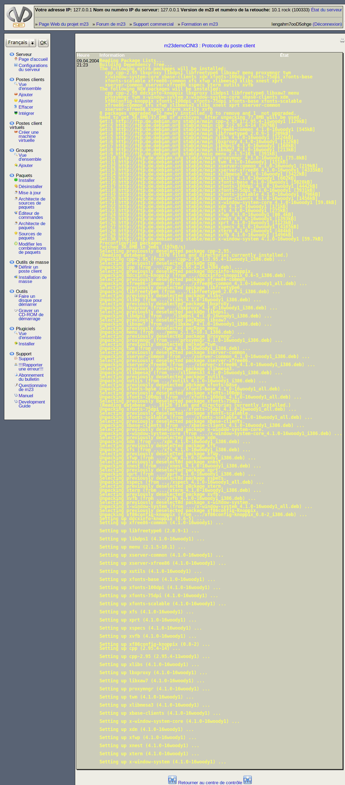

suivant:
Ajouter un poste client
monter:
Administrer des clients
précédent:
Paquets
Table des matières
Protocole du poste client
Ce protocole vous informe sur les installations, désinstallations et autres actions exécutées sur votre poste client.

root 2015-04-30